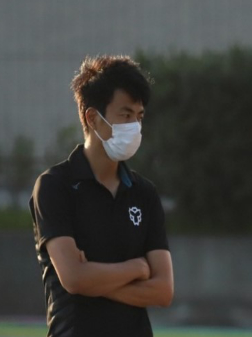

Exploring the Future
XXXXXXXXXXXXX研究室
News & Topics
最新情報を読み込み中...
Lab Chief

XXXXXXXX
XXXXX15XXXXXXXXXX | 准教授・博士（XXXXXXXXX科学）科学的なアプローチによって、アスリートにおける競技力向上や運動初心者における運動技能の改善をねらいます。フィールドから実験室まで様々な場所で測定を行い、国際大会で優勝する選手から運動嫌いな子どもまで幅広い運動パフォーマンスの分析を行っています。世界中の研究機関とのネットワークを活用しながら、前例にとらわれずに、スポーツ科学、社会に貢献することを目指しています。
Read More ↓
XXXXXXXXXXXXX大学院XXXXXXX研究科 教授
キーワード：短距離走、接地メカニクス、筋腱複合体